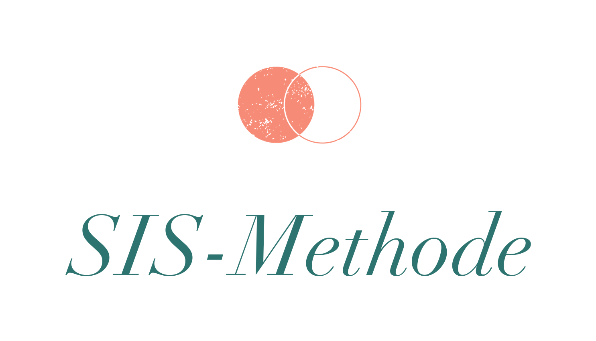

Markenanmeldung · Vorschau zur Freigabe
Die SIS-Methode als eigene Marke
So soll das Markenbild aussehen, das beim Deutschen Patent- und Markenamt als Wort-/Bildmarke eingetragen wird. Schau es dir in Ruhe an, dann geben wir die Anmeldung ab.

Wort-/Bildmarke „SIS-Methode"
- Markenform
- Wort-/BildmarkeLogo + Schriftzug, dadurch eintragungsfähig
- Inhaberin
- Stefanie FronertHeilpraktikerin für Psychotherapie, Düsseldorf
- Amt
- DPMA (Deutschland)Schutzdauer 10 Jahre, danach verlängerbar
- Klassen
- 44 + 41Therapie & Gesundheit · Coaching, Seminare, Bücher
- Gebühr
- 290 €elektronische Anmeldung, bis 3 Klassen
- Status
- Entwurf, wartet auf deine Freigabe
Die Hauptmarke „Spürbar Ich sein" ist als reine Wortmarke bereits eingereicht. Die SIS-Methode kommt hier als Wort-/Bildmarke dazu: Das Logo macht sie unterscheidungskräftig, und der Name der Methode ist Teil der Marke, so ist der Begriff „SIS-Methode" in deinem Feld geschützt.
Passt das Bild so (Schrift, Farbe, Anordnung)? Dann sag kurz Bescheid, und die Anmeldung geht raus.